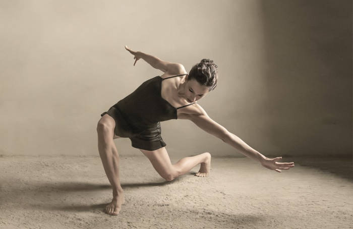
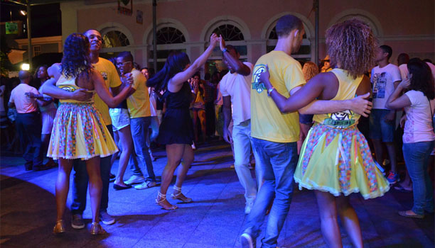
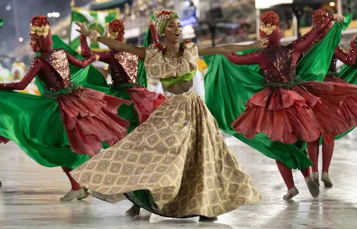

Dia Internacional da Dança |
||
|---|---|---|
PRINCIPAIS ESTILOS DE DANÇA NO BRASIL E NO RESTANTE DO MUNDO:1. Dança contemporânea:Assim, como já foi mencionado acima, a dança contemporânea é um gênero que surgiu como desdobramento da dança moderna. Teve início por volta dos anos 60 nos EUA e buscava trazer outros sentidos para a dança que era praticada até então, tornando os movimentos mais próximos da vida cotidiana e valorizando a improvisação. Somado a isso, podemos dizer que a dança contemporânea é um modo de dançar que está relacionado aos questionamentos e reflexões presentes na atualidade e traz ainda a busca pela consciência corporal e criatividade, podendo também aliar o teatro e a performance em seu repertório. 2. Street Dance: Dança de rua:A dança de rua, ou dança de rua, é uma forma de dança que se originou nos Estados Unidos na década de 1930. Era uma expressão para artistas de cabaré que perderam seus empregos devido à quebra da bolsa de valores de Nova York em 1929. Portanto, muitas pessoas começaram a se apresentar nas ruas. Na década de 1960, o músico e dançarino James Brown popularizou ainda mais o hip-hop ao escrever músicas (funk) inspiradas nos movimentos desses dançarinos e executar esse estilo de dança no palco. 
3. ForróO Forró é um estilo de dança e música originado no Nordeste do Brasil. Apareceu na dança popular no final do século XIX e início do século XX. A dança era executada em chão de terra e as pessoas arrastavam os pés, daí a palavra “rastapé”. Esta dança é executada por duas pessoas e é influenciada pelas danças aborígenes e europeias. 4. SambaNo Brasil, uma das manifestações culturais mais tradicionais é o samba, do qual integram a dança e a música. Essa expressão mescla forte influência africana com elementos europeus, possuindo algumas vertentes em que o ritmo e maneira de dançar possuem características próprias, mas sempre mantendo a vivacidade e alegria. Assim, temos como exemplos o samba de gafieira, o samba de roda, samba carnavalesco e o samba rock. Uma das modalidades mais complexas é o samba de gafieira. É preciso muito conhecimento técnico para executar as piruetas, além disso, é necessário ter grande sintonia com o parceiro ou parceira, já que essa é uma dança de casal.  |
||